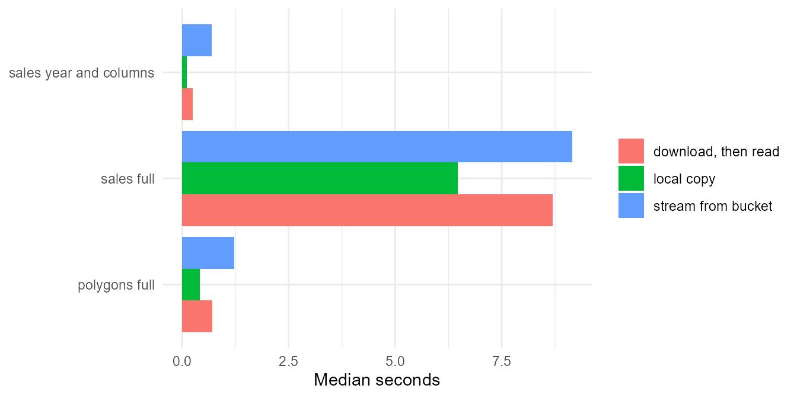

Benchmark: a store in the cloud against a local copy
Source:vignettes/articles/benchmark-cloud.Rmd
benchmark-cloud.RmdThis article reads stored results; it does not run the benchmark. The
script is bench/cloud.R; its code is shown below as it was
run.
Question
A store kept in Google Cloud Storage is read by streaming: Arrow
fetches the byte ranges it needs from the bucket. How does that compare
with downloading whole files first, and with reading a local copy of the
same store? What does a first connection cost (new credentials and file
system) against a later one, what does MD5 verification cost when the
bucket reports the MD5 of each object, and what does
store_sync() cost?
Setup
env <- cloud[1, grep("^env_", names(cloud))]
knitr::kable(data.frame(
item = sub("^env_", "", names(env)),
value = vapply(env, function(v) as.character(v[[1]]), character(1)),
row.names = NULL
))| item | value |
|---|---|
| date | 2026-11-21 09:46:08 |
| commit | f00effc |
| r_version | 4.6.2 |
| os | Windows 10 x64 |
| cpu | Intel64 Family 6 Model 142 Stepping 12, GenuineIntel |
| cores | 8 |
| ram_gb | 31.8 |
| storage | gcs |
| packages | {“rcs”:“0.0.0.9000”,“arrow”:“26.0.1”,“sf”:“1.1.3”,“h3o”:“0.3.0”,“h3jsr”:“1.3.1”,“terra”:“1.9.50”,“duckdb”:“2.0.0”,“bit64”:“4.8.6”} |
One store of 101 catalog entries (98 small tables, a table of 1e6
rows partitioned by year in 15 files of 28.3 MB together, 1e5 polygons
and their index table; 220 files, 40.8 MB) is written to a local folder
and its files are copied unchanged under a random prefix of a test
bucket, removed at the end. Each measure is timed with
bench_run() (five repetitions, median reported).
- Connect:
store_connect()to the local copy; to the bucket cold (the Arrow file system and the access token created again before every repetition, as in a new R session) and warm. - Reads:
store_read()streaming from the bucket; the dataset’s files downloaded whole (be_get()) into an empty folder;store_read()of the local copy. Download-then-read is the sum of the last two. - MD5:
be_md5()of the table’s files (object metadata on the bucket, hashing the files on the local copy), andstore_check()withoutx(MD5, rows and schema from the Parquet footers). - Sync:
store_sync()of the polygons and their index table from the local store to a new, empty secondary under the same prefix (a new secondary for every repetition), and to a secondary that already holds them (nothing to transfer).
root <- normalizePath(Sys.getenv("RCS_BENCH_ROOT", "."), winslash = "/")
devtools::load_all(root, quiet = TRUE)
source(file.path(root, "bench", "harness.R"))
results_dir <- file.path(root, "bench", "results")
rlang::check_installed(c("h3o", "bench", "gargle", "httr2"))
gcs_root <- Sys.getenv("RCS_TEST_GCS", "")
if (!nzchar(gcs_root)) {
cli::cli_abort("Set {.envvar RCS_TEST_GCS} to a test bucket; this benchmark needs one.")
}
n_table <- 1e6
n_polygons <- 1e5
n_small <- 98
work <- file.path(tempdir(), "rcs-bench-cloud")
unlink(work, recursive = TRUE)
local_root <- file.path(work, "store")
gcs_uri <- paste0(
sub("/+$", "", gcs_root), "/bench-",
substr(md5_string(paste(Sys.time(), stats::runif(1))), 1, 10), "/store"
)
options(rcs.quiet = TRUE)
env <- bench_env(storage = "gcs")
env$commit <- tryCatch(
system2("git", c("-C", root, "rev-parse", "--short", "HEAD"), stdout = TRUE),
error = function(e) NA_character_
)
# The local store, then its files copied one by one to the bucket with the
# package's own upload (`be_put()`), so that every object carries its MD5.
build_stores <- function() {
st <- store_connect(local_root, create = TRUE)
for (i in seq_len(n_small)) {
store_write(st, rcs_sim_table(200, seed = i), sprintf("small/t%03d", i),
title = sprintf("Small table %d", i), description = "Simulated daily sales, a small sample.",
key = c("shop_id", "date", "product")
)
}
store_write(st, rcs_sim_table(n_table, seed = 1), "sales/daily",
title = "Daily sales", description = "Simulated daily sales.",
key = c("shop_id", "date", "product"), partition = "year"
)
store_write(st, rcs_sim_polygons(n_polygons, seed = 1), "shapes/polygons",
title = "Polygons", description = "Simulated polygons in open ocean."
)
local <- be_new(local_root)
remote <- be_new(gcs_uri)
listing <- be_list(local)
for (p in listing$path) {
with_retry(function() be_put(remote, file.path(local_root, p), p))
}
list(datasets = nrow(st$primary$catalog), bytes = sum(listing$bytes), objects = nrow(listing))
}
# Cold: the Arrow file system and the access token are created again (as in
# a new R session); warm: both are reused.
connect_cases <- function() {
rbind(
bench_run(connect_local = store_connect(local_root), case = "connect"),
bench_run(
connect_gcs_cold = store_connect(gcs_uri), case = "connect", run = "cold",
setup = quote(gcs_reset_clients())
),
bench_run(connect_gcs_warm = store_connect(gcs_uri), case = "connect")
)
}
# Streaming: `store_read()` on the bucket. Download: the dataset's files
# fetched whole (`be_get()`) into an empty folder; the local read of the
# copy is timed separately, so download-then-read is the sum of the two.
download <- function(be, paths) {
for (p in paths) be_get(be, p, file.path(dl_dir, p))
}
read_cases <- function(st_gcs, st_local) {
be_gcs <- st_gcs$primary$backend
files <- st_gcs$primary$files
sales <- files$path[files$dataset == "sales/daily"]
sales_2025 <- files$path[files$dataset == "sales/daily" & grepl('"year":2025', files$partition_values, fixed = TRUE)]
polygons <- files$path[files$dataset == "shapes/polygons"]
fresh <- quote(unlink(dl_dir, recursive = TRUE))
rbind(
bench_run(stream = store_read(st_gcs, "sales/daily"), case = "sales full"),
bench_run(download = download(be_gcs, sales), case = "sales full", setup = fresh),
bench_run(local = store_read(st_local, "sales/daily"), case = "sales full"),
bench_run(
stream = store_read(st_gcs, "sales/daily", year == 2025L, columns = c(shop_id, date, qty)),
case = "sales year and columns"
),
bench_run(download = download(be_gcs, sales_2025), case = "sales year and columns", setup = fresh),
bench_run(
local = store_read(st_local, "sales/daily", year == 2025L, columns = c(shop_id, date, qty)),
case = "sales year and columns"
),
bench_run(stream = store_read(st_gcs, "shapes/polygons"), case = "polygons full"),
bench_run(download = download(be_gcs, polygons), case = "polygons full", setup = fresh),
bench_run(local = store_read(st_local, "shapes/polygons"), case = "polygons full")
)
}
# MD5 of the stored files: from object metadata on the bucket, by hashing
# the files locally; and the integrity check, which adds the Parquet footers.
md5_cases <- function(st_gcs, st_local) {
files <- st_gcs$primary$files
sales <- files$path[files$dataset == "sales/daily"]
rbind(
bench_run(gcs = be_md5(st_gcs$primary$backend, sales), case = "md5 of sales files"),
bench_run(local = be_md5(st_local$primary$backend, sales), case = "md5 of sales files"),
bench_run(gcs = store_check(st_gcs, "sales/daily"), case = "check sales"),
bench_run(local = store_check(st_local, "sales/daily"), case = "check sales")
)
}
# A new secondary for every repetition of the sync to an empty location.
sync_cases <- function() {
sync_root <- paste0(sub("/store$", "", gcs_uri), "/sync-")
state <- new.env()
state$i <- 0L
fresh_secondary <- rlang::expr({
i <- i + 1L
st_sync <- store_connect(local_root, secondary = paste0(!!sync_root, i), create = TRUE)
})
empty <- bench_run(
sync_empty = store_sync(st_sync, datasets = "shapes/polygons"),
case = "sync polygons", setup = fresh_secondary, env = state
)
st_same <- store_connect(local_root, secondary = paste0(sync_root, "same"), create = TRUE)
store_sync(st_same, datasets = "shapes/polygons")
same <- bench_run(sync_identical = store_sync(st_same, datasets = "shapes/polygons"), case = "sync polygons")
rbind(empty, same)
}
remove_gcs_prefix <- function() {
be <- be_new(sub("/store$", "", gcs_uri))
left <- tryCatch(be_list(be), error = function(e) NULL)
if (!is.null(left) && nrow(left) > 0) be_delete(be, left$path)
cli::cli_inform("Removed {if (is.null(left)) 0 else nrow(left)} object{?s} under the benchmark prefix.")
}
dl_dir <- file.path(work, "download")
run_all <- function() {
cli::cli_inform("Building the stores.")
built <- build_stores()
st_local <- store_connect(local_root)
st_gcs <- store_connect(gcs_uri)
cli::cli_inform("Timing connect.")
timed <- connect_cases()
cli::cli_inform("Timing reads.")
timed <- rbind(timed, read_cases(st_gcs, st_local))
cli::cli_inform("Timing MD5 and checks.")
timed <- rbind(timed, md5_cases(st_gcs, st_local))
cli::cli_inform("Timing sync.")
timed <- rbind(timed, sync_cases())
counted <- counter_cases(st_gcs, st_local)
timed$datasets <- built$datasets
timed$store_bytes <- built$bytes
timed$store_objects <- built$objects
sales <- st_local$primary$files[st_local$primary$files$dataset == "sales/daily", ]
timed$sales_bytes <- sum(sales$bytes)
timed$sales_files <- nrow(sales)
list(timed = timed, counted = counted)
}
out <- tryCatch(run_all(), finally = remove_gcs_prefix())
bench_save(out$timed, "cloud", env = env, dir = results_dir)
bench_save(out$counted, "cloud-counters", env = env, dir = results_dir)
unlink(work, recursive = TRUE)Results
shown <- cloud[c("case", "expression", "run", "median_s", "min_s", "max_s")]
shown[4:6] <- lapply(shown[4:6], signif, 3)
knitr::kable(shown)| case | expression | run | median_s | min_s | max_s |
|---|---|---|---|---|---|
| connect | connect_local | warm | 0.051 | 0.0498 | 0.0537 |
| connect | connect_gcs_cold | cold | 0.556 | 0.4470 | 0.6520 |
| connect | connect_gcs_warm | warm | 0.443 | 0.4250 | 0.5420 |
| sales full | stream | warm | 9.150 | 7.7300 | 11.3000 |
| sales full | download | warm | 2.230 | 2.1300 | 2.3700 |
| sales full | local | warm | 6.470 | 4.0100 | 8.5500 |
| sales year and columns | stream | warm | 0.698 | 0.6750 | 0.8040 |
| sales year and columns | download | warm | 0.140 | 0.1250 | 0.5070 |
| sales year and columns | local | warm | 0.104 | 0.1030 | 0.1050 |
| polygons full | stream | warm | 1.220 | 1.1200 | 1.5700 |
| polygons full | download | warm | 0.293 | 0.2720 | 0.3300 |
| polygons full | local | warm | 0.419 | 0.4120 | 0.4310 |
| md5 of sales files | gcs | warm | 0.198 | 0.1720 | 0.2350 |
| md5 of sales files | local | warm | 0.114 | 0.1130 | 0.1210 |
| check sales | gcs | warm | 4.430 | 4.2400 | 4.6500 |
| check sales | local | warm | 0.499 | 0.4800 | 0.5470 |
| sync polygons | sync_empty | warm | 4.840 | 0.4430 | 5.0200 |
| sync polygons | sync_identical | warm | 0.327 | 0.2990 | 0.3690 |
Streaming against download, in seconds:
cases <- c("sales full", "sales year and columns", "polygons full")
compare <- data.frame(
case = cases,
stream = sapply(cases, med, "stream"),
download = sapply(cases, med, "download"),
local_read = sapply(cases, med, "local")
)
compare$download_then_read <- compare$download + compare$local_read
compare$stream_over_local <- compare$stream / compare$local_read
compare[-1] <- lapply(compare[-1], signif, 3)
knitr::kable(compare, row.names = FALSE)| case | stream | download | local_read | download_then_read | stream_over_local |
|---|---|---|---|---|---|
| sales full | 9.150 | 2.230 | 6.470 | 8.700 | 1.41 |
| sales year and columns | 0.698 | 0.140 | 0.104 | 0.243 | 6.73 |
| polygons full | 1.220 | 0.293 | 0.419 | 0.713 | 2.90 |
For “sales year and columns” the download is of the one file of that year, which the catalog names; streaming fetches only the three columns of it.
library(ggplot2)
long <- data.frame(
case = rep(compare$case, 3),
method = rep(c("stream from bucket", "download, then read", "local copy"), each = nrow(compare)),
seconds = c(compare$stream, compare$download_then_read, compare$local_read)
)
ggplot(long, aes(x = seconds, y = case, fill = method)) +
geom_col(position = "dodge") +
labs(x = "Median seconds", y = NULL, fill = NULL) +
theme_minimal()
Work counters (backend calls and catalog files read):
shown <- counters[counters$counter %in% c("backend_call", "catalog_read", "file_open", "bytes_down"), ]
shown <- stats::aggregate(n ~ case + expression + counter, data = shown, FUN = sum)
wide <- stats::reshape(shown, idvar = c("case", "expression"), timevar = "counter", direction = "wide")
names(wide) <- sub("^n\\.", "", names(wide))
wide[is.na(wide)] <- 0
knitr::kable(wide, row.names = FALSE, format.args = list(big.mark = ","))| case | expression | backend_call | bytes_down | catalog_read | file_open |
|---|---|---|---|---|---|
| check sales | gcs | 6 | 40,009 | 2 | 15 |
| connect | gcs | 5 | 33,194 | 2 | 0 |
| sales full | gcs | 2 | 0 | 0 | 15 |
| sales year and columns | gcs | 3 | 0 | 0 | 1 |
| check sales | local | 6 | 40,009 | 2 | 15 |
| connect | local | 5 | 33,194 | 2 | 0 |
| sales full | local | 2 | 0 | 0 | 15 |
| sales year and columns | local | 3 | 0 | 0 | 1 |
Verdict
Connect to the bucket: 0.56 s cold, 0.44 s warm, against 0.051 s for the local copy, with a catalog of 101 entries. A connection reads two catalog files and the store’s settings, so its cost is a few round trips, not the size of the store.
Full reads: streaming takes 1.4 times as long as reading the local copy for the table, and 1.1 times as long as downloading the files first and reading them. The decoding of the rows in R costs the same on both sides, so streaming adds little to a full read.
Filtered reads: one year and three columns streamed in 0.7 s, against 0.24 s to download that year’s file and read it locally.
store_read()prunes the partitions on the catalog before it opens any file (opening an Arrow dataset costs a request per file on the bucket), so it reads one file’s footer for the schema and then opens only the file of that year; before this was changed, it opened all 15 files first and took about twice as long. The remaining difference to the download is the footer read and the separate requests for the three columns.MD5 verification on the bucket reads object metadata:
be_md5()of 15 files takes 0.2 s (0.11 s to hash the local files); the whole integrity check takes 4.4 s on the bucket against 0.5 s locally, because it reads the Parquet footer of each file, one file after the other, over the network. MD5 verification itself is cheap on the bucket; the footers are the cost.Sync: copying the polygons and their index table to an empty secondary in the bucket took 4.8 s (upload and MD5 verification of each file, then the manifest and the three catalog files); a sync to a secondary that already holds them reads the catalogs, finds nothing to copy and takes 0.33 s. (The minimum of the first is that of the repeated first repetition, which found the secondary already synced.)
Limits
- One machine and one network connection; its bandwidth to the bucket bounds every cloud number. The machine was quiet.
-
store_sync()is measured for one dataset (the polygons and their index table) only. - “Cold” means a new Arrow file system and a new access token in the same R session; the time to start R and load the package is not included.
- Spatial queries on the bucket are measured in
benchmark-spatial.Rmd.